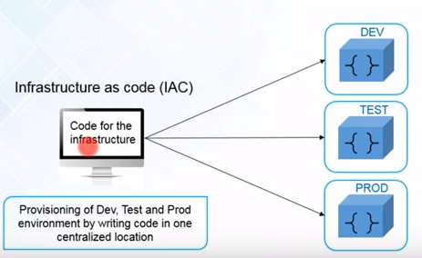
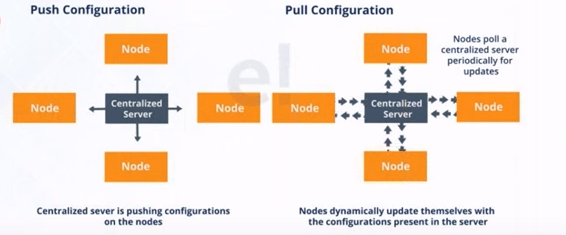
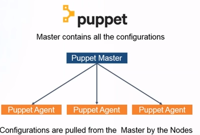
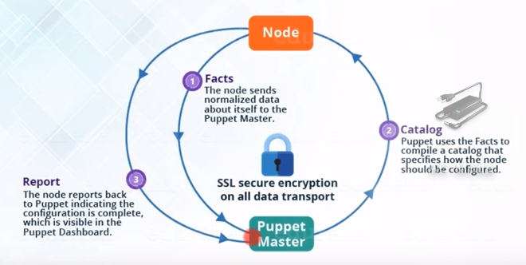
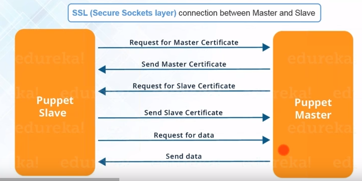

Puppet
Overview
Configuration management is an important task of IT department in any organization. It is process of managing infrastructure changes in structured and systematic way. Manual rolling back of infrastructure to previous version of software is cumbersome, time consuming and error prone. Puppet is configuration management tool that simplifies complex task of deploying new software, applying software updates and rollback software packages in large cluster. Puppet does this through Infrastructure as Code (IAC). Code is written for infrastructure on one central location and is pushed to nodes in all environments (Dev, Test, Production) using puppet tool. Configuration management tool has two approaches for managing infrastructure; Configuration push and pull. In push configuration, infrastructure as code is pushed from centralized server to nodes whereas in pull configuration nodes pulls infrastructure as code from central server as shown in @fig:InfrastructureAsCode.

{kind=link}
Puppet uses push and pull configuration in centralized manner as shown in @fig:push-pull-config.

{kind=link}
Another popular infrastructure tool is Ansible. It does not have master and client nodes. Any node in Ansible can act as executor. Any node containing list of inventory and SSH credential can play master node role to connect with other nodes as opposed to puppet architecture where server and agent software needs to be setup and installed. Configuring Ansible nodes is simple, it just requires python version 2.5 or greater. Ansible uses push architecture for configuration.
Master slave architecture
Puppet uses master slave architecture as shown in @fig:master-slave. Puppet server is called as master node and client nodes are called as puppet agent. Agents poll server at regular interval and pulls updated configuration from master. Puppet Master is highly available. It supports multi master architecture. If one master goes down backup master stands up to serve infrastructure.
Workflow
- nodes (puppet agents) sends information (for e.g IP, hardware detail, network etc.) to master. Master stores such information in manifest file.
- Master node compiles catalog file containing configuration information that needs to be implemented on agent nodes.
- Master pushes catalog to puppet agent nodes for implementing configuration.
- Client nodes send back updated report to Master. Master updates its inventory.
- All exchange between master and agent is secured through SSL encryption (see @fig:master-slave)

{kind=link}
@fig:master-slave1, shows flow between master and slave.

{kind=link}
@fig:master-slave-connection shows SSL workflow between master and slave.

{kind=link}
Puppet comes in two forms. Open source Puppet and Enterprise In this tutorial we will showcase installation steps of both forms.
Install Opensource Puppet on Ubuntu
We will demonstrate installation of Puppet on Ubuntu
Prerequisite - Atleast 4 GB RAM, Ubuntu box ( standalone or VM )
First, we need to make sure that Puppet master and agent is able to communicate with each other. Agent should be able to connect with master using name.
configure Puppet server name and map with its ip address
contents of the /etc/hosts should look like
my-puppet-master is name of Puppet master to which Puppet agent would try to connect
press <ctrl> + O to Save and <ctrl> + X to exit
Next, we will install Puppet on Ubuntu server. We will execute the following commands to pull from official Puppet Labs Repository
$ curl -O https://apt.puppetlabs.com/puppetlabs-release-pc1-xenial.deb
$ sudo dpkg -i puppetlabs-release-pc1-xenial.deb
$ sudo apt-get update
Intstall the Puppet server
Default instllation of Puppet server is configured to use 2 GB of RAM. However, we can customize this by opening puppetserver configuration file
This will open the file in editor. Look for JAVA_ARGS line and
change the value of -Xms and -Xmx parameters to 3g if we wish
to configure Puppet server for 3GB RAM. Note that default value
of this parameter is 2g.
press <ctrl> + O to Save and <ctrl> + X to exit
By default Puppet server is configured to use port 8140 to communicate with agents. We need to make sure that firewall allows to communicate on this port
next, we start Puppet server
Verify server has started
we would see "active(running)" if server has started successfully
$ sudo systemctl status puppetserver
● puppetserver.service - puppetserver Service
Loaded: loaded (/lib/systemd/system/puppetserver.service; disabled; vendor pr
Active: active (running) since Sun 2019-01-27 00:12:38 EST; 2min 29s ago
Process: 3262 ExecStart=/opt/puppetlabs/server/apps/puppetserver/bin/puppetser
Main PID: 3269 (java)
CGroup: /system.slice/puppetserver.service
└─3269 /usr/bin/java -Xms3g -Xmx3g -XX:MaxPermSize=256m -Djava.securi
Jan 27 00:11:34 ritesh-ubuntu1 systemd[1]: Starting puppetserver Service...
Jan 27 00:11:34 ritesh-ubuntu1 puppetserver[3262]: OpenJDK 64-Bit Server VM warn
Jan 27 00:12:38 ritesh-ubuntu1 systemd[1]: Started puppetserver Service.
lines 1-11/11 (END)
configure Puppet server to start at boot time
Next, we will install Puppet agent
start Puppet agent
configure Puppet agent to start at boot time
next, we need to change Puppet agent config file so that it can connect to Puppet master and communicate
configuration file will be opened in an editor. Add following sections in file
Note: my-puppet-server is the name that we have set up in /etc/hosts file while installing Puppet server. And certname is the name of the certificate
Puppet agent sends certificate signing request to Puppet server when it connects first time. After signing request, Puppet server trusts and identifies agent for managing.
execute following command on Puppet Master in order to see all incoming cerficate signing requests
we will see something like
$ sudo /opt/puppetlabs/bin/puppet cert list
"puppet-agent" (SHA256) 7B:C1:FA:73:7A:35:00:93:AF:9F:42:05:77:9B:
05:09:2F:EA:15:A7:5C:C9:D7:2F:D7:4F:37:A8:6E:3C:FF:6B
- Note that puppet-agent is the name that we have configured for certname in puppet.conf file*
After validating that request is from valid and trusted agent, we sign the request
we will see message saying certificate was signed if successful
$ sudo /opt/puppetlabs/bin/puppet cert sign puppet-agent
Signing Certificate Request for:
"puppet-agent" (SHA256) 7B:C1:FA:73:7A:35:00:93:AF:9F:42:05:77:9B:05:09:2F:
EA:15:A7:5C:C9:D7:2F:D7:4F:37:A8:6E:3C:FF:6B
Notice: Signed certificate request for puppet-agent
Notice: Removing file Puppet::SSL::CertificateRequest puppet-agent
at '/etc/puppetlabs/puppet/ssl/ca/requests/puppet-agent.pem'
Next, we will verify installation and make sure that Puppet server is able to push configuration to agent. Puppet uses domian specific language code written in manifests ( .pp ) file
create default manifest site.pp file
This will open file in edit mode. Make following changes to this file
file {'/tmp/it_works.txt': # resource type file and filename
ensure => present, # make sure it exists
mode => '0644', # file permissions
content => "It works!\n", # Print the eth0 IP fact
}
domain specific language is used to create it_works.txt file inside /tmp directory on agent node. ensure directive make sure that file is present. It creates one if file is removed. mode directive specifies that process has write permission on file to make changes. content directive is used to define content of the changes applied [hid-sp18-523-open]
next, we test the installation on single node
successfull verification will display
Info: Using configured environment 'production'
Info: Retrieving pluginfacts
Info: Retrieving plugin
Info: Caching catalog for puppet-agent
Info: Applying configuration version '1548305548'
Notice: /Stage[main]/Main/File[/tmp/it_works.txt]/content:
--- /tmp/it_works.txt 2019-01-27 02:32:49.810181594 +0000
+++ /tmp/puppet-file20190124-9628-1vy51gg 2019-01-27 02:52:28.717734377 +0000
@@ -0,0 +1 @@
+it works!
Info: Computing checksum on file /tmp/it_works.txt
Info: /Stage[main]/Main/File[/tmp/it_works.txt]: Filebucketed /tmp/it_works.txt
to puppet with sum d41d8cd98f00b204e9800998ecf8427e
Notice: /Stage[main]/Main/File[/tmp/it_works.txt]/content: content
changed '{md5}d41d8cd98f00b204e9800998ecf8427e' to '{md5}0375aad9b9f3905d3c545b500e871aca'
Info: Creating state file /opt/puppetlabs/puppet/cache/state/state.yaml
Notice: Applied catalog in 0.13 seconds
Installation of Puppet Enterprise
First, download ubuntu-<version and arch>.tar.gz and CPG
signature file on Ubuntu VM
Second, we import Puppet public key
we will see ouput as
--2019-02-03 14:02:54-- https://downloads.puppetlabs.com/puppet-gpg-signing-key.pub
Resolving downloads.puppetlabs.com
(downloads.puppetlabs.com)... 2600:9000:201a:b800:10:d91b:7380:93a1
, 2600:9000:201a:800:10:d91b:7380:93a1, 2600:9000:201a:be00:10:d91b:7380:93a1, ...
Connecting to downloads.puppetlabs.com (downloads.puppetlabs.com)
|2600:9000:201a:b800:10:d91b:7380:93a1|:443... connected.
HTTP request sent, awaiting response... 200 OK
Length: 3139 (3.1K) [binary/octet-stream]
Saving to: 'STDOUT'
- 100%[===================>] 3.07K --.-KB/s in 0s
2019-02-03 14:02:54 (618 MB/s) - written to stdout [3139/3139]
gpg: key 7F438280EF8D349F: "Puppet, Inc. Release Key
(Puppet, Inc. Release Key) <release@puppet.com>" not changed
gpg: Total number processed: 1
gpg: unchanged: 1
Third, we print fingerprint of used key
we will see successful output as
pub rsa4096 2016-08-18 [SC] [expires: 2021-08-17]
6F6B 1550 9CF8 E59E 6E46 9F32 7F43 8280 EF8D 349F
uid [ unknown] Puppet, Inc. Release Key
(Puppet, Inc. Release Key) <release@puppet.com>
sub rsa4096 2016-08-18 [E] [expires: 2021-08-17]
Fourth, we verify release signature of installed package
successful output will show as
gpg: assuming signed data in 'puppet-enterprise-2019.0.2-ubuntu-18.04-amd64.tar.gz'
gpg: Signature made Fri 25 Jan 2019 02:03:23 PM EST
gpg: using RSA key 7F438280EF8D349F
gpg: Good signature from "Puppet, Inc. Release Key
(Puppet, Inc. Release Key) <release@puppet.com>" [unknown]
gpg: WARNING: This key is not certified with a trusted signature!
gpg: There is no indication that the signature belongs to the owner.
Primary key fingerprint: 6F6B 1550 9CF8 E59E 6E46 9F32 7F43 8280 EF8D 349
Next, we need to unpack installation tarball.
Store location of path in $TARBALL variable. This variable will be
used in our installation.
then, we extract tarball
Next, we run installer from installer directory
This will ask us to chose installation option; we could chose from guided installation or text based installation
~/pe/puppet-enterprise-2019.0.2-ubuntu-18.04-amd64
$ sudo ./puppet-enterprise-installer
~/pe/puppet-enterprise-2019.0.2-ubuntu-18.04-amd64
~/pe/puppet-enterprise-2019.0.2-ubuntu-18.04-amd64
=============================================================
Puppet Enterprise Installer
=============================================================
## Installer analytics are enabled by default.
## To disable, set the DISABLE_ANALYTICS environment variable and rerun
this script.
For example, "sudo DISABLE_ANALYTICS=1 ./puppet-enterprise-installer".
## If puppet_enterprise::send_analytics_data is set to false in your
existing pe.conf, this is not necessary and analytics will be disabled.
Puppet Enterprise offers three different methods of installation.
[1] Express Installation (Recommended)
This method will install PE and provide you with a link at the end
of the installation to reset your PE console admin password
Make sure to click on the link and reset your password before proceeding
to use PE
[2] Text-mode Install
This method will open your EDITOR (vi) with a PE config file (pe.conf)
for you to edit before you proceed with installation.
The pe.conf file is a HOCON formatted file that declares parameters
and values needed to install and configure PE.
We recommend that you review it carefully before proceeding.
[3] Graphical-mode Install
This method will install and configure a temporary webserver to walk
you through the various configuration options.
NOTE: This method requires you to be able to access port 3000 on this
machine from your desktop web browser.
=============================================================
How to proceed? [1]:
-------------------------------------------------------------------
Press 3 for web based Graphic-mode-Install
when successfull, we will see output as
## We're preparing the Web Installer...
2019-02-02T20:01:39.677-05:00 Running command:
mkdir -p /opt/puppetlabs/puppet/share/installer/installer
2019-02-02T20:01:39.685-05:00 Running command:
cp -pR /home/ritesh/pe/puppet-enterprise-2019.0.2-ubuntu-18.04-amd64/*
/opt/puppetlabs/puppet/share/installer/installer/
## Go to https://<localhost>:3000 in your browser to continue installation.
By default Puppet Enterprise server uses 3000 port. Make sure that firewall allows communication on port 3000
Next, go to https://localhost:3000 url for completing installation
Click on get started button.
Chose install on this server
Enter <mypserver> as DNS name. This is our Puppet Server name.
This can be configured in confile file also.
Enter console admin password
Click continue
we will get confirm the plan screen with following information
click continue and verify installer validation screen.click Deploy Now button
Puppet enterprise will be installed and will display message on screen
login to console with admin password that was set earlier and click on nodes links to manage nodes.
Installing Puppet Enterprise as Text mode monolithic installation
Enter 2 on How to Proceed for text mode monolithic installation.
Following message will be displayed if successfull.
2019-02-02T22:08:12.662-05:00 - [Notice]: Applied catalog in 339.28 seconds
2019-02-02T22:08:13.856-05:00 - [Notice]:
Sent analytics: pe_installer - install_finish - succeeded
* /opt/puppetlabs/puppet/bin/puppet infrastructure configure
--detailed-exitcodes --environmentpath /opt/puppetlabs/server/data/environments
--environment enterprise --no-noop --install=2019.0.2 --install-method='repair'
* returned: 2
## Puppet Enterprise configuration complete!
Documentation: https://puppet.com/docs/pe/2019.0/pe_user_guide.html
Release notes: https://puppet.com/docs/pe/2019.0/pe_release_notes.html
If this is a monolithic configuration, run 'puppet agent -t' to complete the
setup of this system.
If this is a split configuration, install or upgrade the remaining PE components,
and then run puppet agent -t on the Puppet master, PuppetDB, and PE console,
in that order.
~/pe/puppet-enterprise-2019.0.2-ubuntu-18.04-amd64
2019-02-02T22:08:14.805-05:00 Running command: /opt/puppetlabs/puppet/bin/puppet
agent --enable
~/pe/puppet-enterprise-2019.0.2-ubuntu-18.04-amd64$
This is called as monolithic installation as all components of Puppet Enterprise such as Puppet master, PuppetDB and Console are installed on single node. This installation type is easy to install. Troubleshooting errors and upgrading infrastructure using this type is simple. This installation type can easily support infrastructure of up to 20,000 managed nodes. Compiled master nodes can be added as network grows. This is recommended installation type for small to mid size organizations [@hid-sp18-523-mono].
pe.conf configuration file will be opened in editor to configure
values. This file contains parameters and values for installing,
upgrading and configuring Puppet.
Some important parameters that can be specified in
pe.conf file are
console_admin_password
puppet_enterprise::console_host
puppet_enterprise::puppetdb_host
puppet_enterprise::puppetdb_database_name
puppet_enterprise::puppetdb_database_user
Lastly, we run puppet after installation is complete
Text mode split installation is performed for large networks. Compared to monolithic installation split installation type can manage large infrastucture that requires more than 20,000 nodes. In this type of installation different components of Puppet Enterprise (master, PuppetDB and Console) are installed on different nodes. This installation type is recommended for organizations with large infrastructure needs [@hid-sp18-523-split].
In this type of installation, we need to install componenets in specific order. First master then puppet db followed by console.
Puppet Enterprise master and agent settings can be configured in
puppet.conf file. Most configuration settings of Puppet Enterprise
componenets such as Master, Agent and security certificates are all
specified in this file.
Config section of Agent Node
[main]
certname = <http://your-domain-name.com/>
server = puppetserver
environment = testing
runinterval = 4h
Config section of Master Node
[main]
certname = <http://your-domain-name.com/>
server = puppetserver
environment = testing
runinterval = 4h
strict_variables = true
[master]
dns_alt_names = puppetserver,puppet, <http://your-domain-name.com/>
reports = pupated
storeconfigs_backend = puppetdb
storeconfigs = true
environment_timeout = unlimited
Comment lines, Settings lines and Settings variables are main components of puppet configuration file. Comments in config files are specified by prefixing hash character. Setting line consists name of setting followed by equal sign, value of setting are specified in this section. Setting variable value generally consists of one word but multiple can be specified in rare cases [@hid-sp18-523-config].